搜狗浏览器
按照如下方式操作：
1、打开搜狗浏览器，点击菜单里的工具 - 搜狗高速浏览器选项，如图所示：
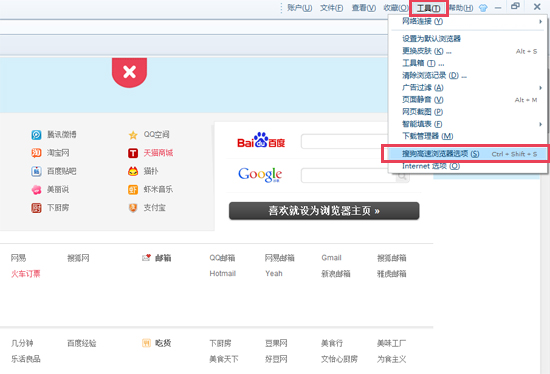
2、选择常规选项，在启动设置里选择自定义网址，并输入http://xiaohebao.net/，点击确定，就可以设定小荷包为浏览器主页了。
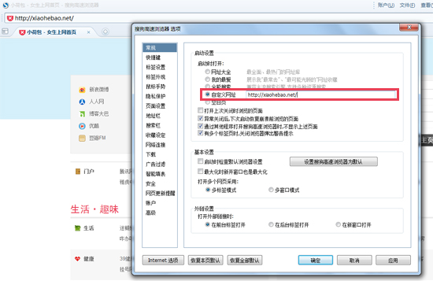
360浏览器
按照如下方式操作：
1、打开360浏览器，工具（alt+t）-主页设置，如图所示：
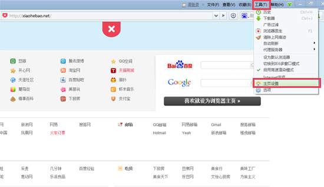
2、在浏览器启动时打开（主页设置）内输入http://xiaohebao.net/后，关闭即可。
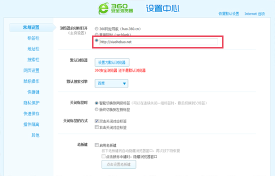
QQ浏览器
按照如下方式操作：
1、打开QQ浏览器，点击右上角菜单 - QQ浏览器选项，如图所示：
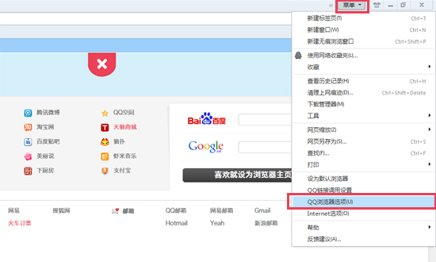
2、选择常规设置主页选项，勾选自定义网址，并输入http://xiaohebao.net/，点击确定，就可以设定小荷包为浏览器主页了。
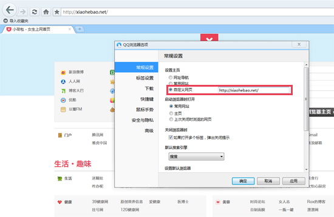
Firefox浏览器
按照如下方式操作：
1、打开浏览器，先打开小荷包的页面（这步很重要），选择左上角Firefox菜单工具 - 选项，如图所示：

2、选择常规，依次选择显示我的主页；输入http://xiaohebao.net/ 主页地址，点击使用当前页按钮。最后点击确定就可以了。

Chrome浏览器
按照如下方式操作：
1、打开谷歌浏览器-点右上角图标-设置，如图所示：

2、打开特定网页或一组网页-勾选。点旁边的设置网页。
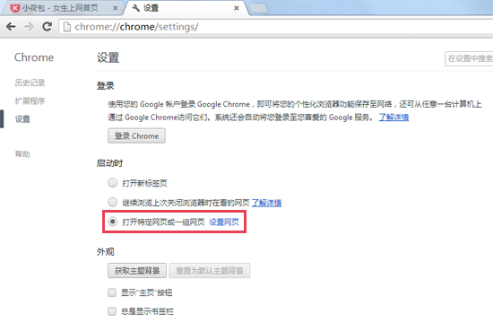
3、在打开此页后输入http://xiaohebao.net/ 点确定即可。
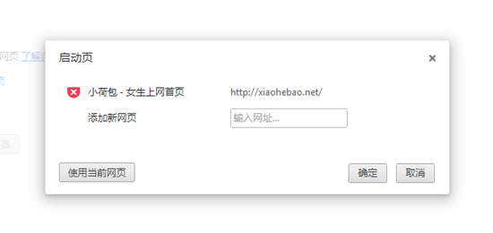
Opera浏览器
按照如下方式操作：
1、打开opera浏览器-左上角菜单-设置-首选项，如图所示：
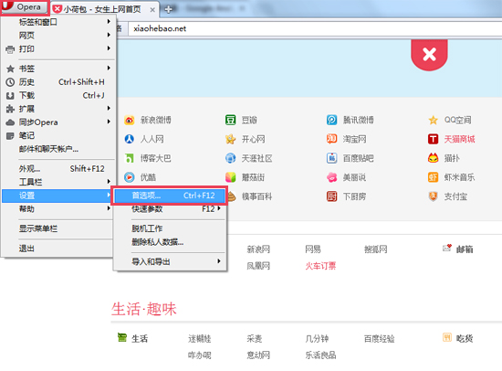
2、常规-启动内选择-打开主页，主页内输入http://xiaohebao.net/。最后确定保存就可以了。
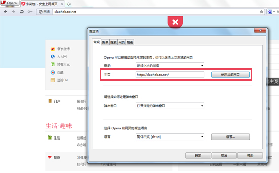
Safari浏览器
按照如下方式操作：
1、打开Safari浏览器，点击右上角设置菜单图标，选择偏好设置。如图所示：
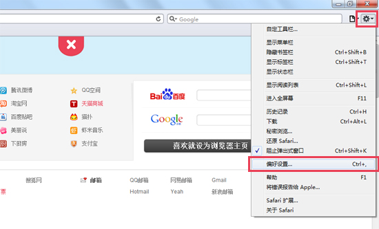
2、常规-主页选项内输入http://xiaohebao.net/后，关闭即可。
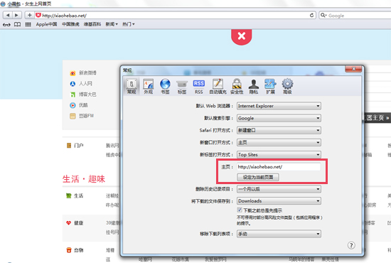